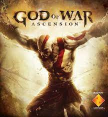

Era Griega
God of War (2005)
Es el primer juego en estrenarse y el tercero en términos cronológicos internos de la saga. El juego narra las aventuras de Kratos, un general espartano, el juego cuenta como el ejército de Kratos iban viajando y aniquilando con todos los pueblos barbaros que se encontraran. A causa de su arrogancia se enfrentó al Rey bárbaro y si ejército, lo que provoco su inminente derrota. Es aquí, en su muerte, donde Kratos decide dar su alma al dios de la Guerra Ares a cambio de la victoria. Entonces Ares desciende del Olimpo cerrando el trato que le había ofrecido Kratos y destruye a todos los enemigos de éste. Luego entregó a Kratos las Espadas del Caos, que quedaron fundidas mediante unas cadenas a sus brazos. Desde este momento se convirtió en el fiel guerrero de su dios Ares, esparciendo violencia y guerras ordenadas por él.
Una noche, Kratos y su ejército tienen el objetivo de aniquilar una aldea, por orden de Ares. El oráculo de la aldea le advierte de su destino y le aconseja no entrar al templo. Kratos no sigue el consejo y al entrar mata a todas las personas que había allí, poseído por una furia ciega que no le permitía ver bien a quien asesinaba. Cuando no queda nadie con vida descubre que entre los muertos estaban su mujer y su hija. Él no se explica por qué estuvieran ahí si él las había dejado en Esparta. El oráculo al presenciar esto lo maldice, cubriéndolo de blanco con las cenizas de los cuerpos de su esposa e hija, este es el nacimiento del apodo por el que es conocido Kratos en el futuro, “El fantasma de Esparta”.
Desde ese momento, y tras 10 largos años Kratos busca redención por sus actos, por eso se vuelve el Campeón de los dioses haciendo tareas imposibles para un simple humano, como matar a la Hidra en el Mar Egeo por orden de Poseidón. Todo ello por solo un trato: el olvido de las pesadillas que le atormentan. Después de tantos años de obediencia, Kratos se comunica con Atenea y le reclama el perdón de sus pecados y el olvido de las pesadillas. Atenea le dice que antes tiene que hacer una tarea más: matar a Ares, ya que estaba destruyendo la ciudad de Atenas, y los dioses no lo podían detener, porque Zeus había dicho que no se debía pelear entre los dioses del Olimpo, es por eso que solo un mortal entrenado por un dios podría encargarse de la tarea de poder matarlo. Con el único propósito de encontrar la paz interna, se embarca en la aventura de matar a un dios. Después de llegar a la ciudad de Atena se entera que necesita mas poder para matar a un dios, así que se embarca en un viaje para "Desierto de las Almas Perdidas” para encontrar el Templo de Pandora, donde se encuentra la caja de Pandora, un artefacto que le dará el poder suficiente para matar a Ares.
Kratos, al haber cumplido el mandato de Atenea, siente que será redimido de sus sentimientos de culpa, pero cuando habla con ella, esta le dice que los dioses han llorado a su hermano caído y que le agradecen por realizar su tarea, pero que no sería despojado de sus pesadillas que le atormentaban cuando mató a su familia ya que ningún hombre y ningún dios olvidaría los terribles hechos que él había cometido. Al ver que ni los dioses pueden hacer que olvide todo su pasado, decide terminar con su vida. Gracias a todas sus hazañas y al a ver quedado un asiento vacío en el olimpo los dioses deciden, hacer de Kratos el nuevo Dios de la Guerra.
God of War II (2007)
El juego comienza cuando Kratos, convertido en dios de la Guerra, amenaza con destruir a toda Grecia, ya que un espartano lo invoca para lograr la "Gloria de Esparta", luego llega Atenea y le dice que no destruya la ciudad o ya no podrá protegerlo, pero Kratos la ignora y se lanza desde lo más alto del Monte Olimpo a la ciudad de Rodas.Al caer en la ciudad de Rodas, un ave blanca le quita una parte de los poderes de dios que posee Kratos y le da vida al Gigante de rodas, una estatua de bronce que tenia como objetivo acabar con Kratos. Tras una larga lucha contra el coloso, Zeus hace presencia para ayudar a Kratos, entregándole la "Espada del Olimpo", la cual uso Zeus para derrotar a los titanes. Pero siempre hay un pago, debe insertar el resto de sus poderes en la espada. Con ella en su poder, derrota fácilmente al Coloso. Al vencer al coloso, Kratos se ve gravemente herido. En este momento vuelve a aparecer el ave blanca, la cual se transforma en Zeus. Este le saca la espada del Olimpo a un Kratos, diciéndole que termine con esta guerra y que le sirva fielmente. Kratos, aun herido gravemente, se niega rotundamente. Zeus no tiene otra alternativa que matar a Kratos, atravesándolo con la espada, también mato a todos los guerreros de Esparta y Rodas.
Kratos es llevado al inframundo de Hades, y recuerda las pesadillas que quería olvidar. En ese momento hace presencia la Titánide Gaia. Ella habla con Kratos, y le dice que le ayudara a salir del Inframundo y a vengarse de Zeus. Kratos no duda en aceptar. Gaia le indica que la única forma de vencer a Zeus es usando la Espada del Olimpo. Para ello, debe viajar en el tiempo al preciso momento que lo mató, y sólo podrá hacerlo gracias a las hermanas del destino y su telar del destino. Después de un gran viaje llega con las hermanas del destino, pero estas se niegan y empieza una feroz batalla entre ellas y Kratos. En la que sale ganador nuestro protagonista, así cumple su objetivo y viaja al pasado para enfrentarse a Zeus.
Después de una dura pelea contra Zeus, este cae a los pies de Kratos, pero al momento de terminar con la vida de Zeus, Atenea interfiere y termina muriendo a matos de Kratos. Gracias a esta distracción Zeus escapa y Atenea con sus ultimas fuerzas revela que Kratos es hijo de Zeus y le pide a Kratos que pare. Kratos furioso vuelve a viajar en el tiempo, pero esta ves salva a los titanes de perder la Titanomaquia, para así aliarse con ellos y enfrentar al Olimpo en el presente.
God of War: Chains of Olympus (2008)
Este juego es una precuela de la serie principal de God of War y se sitúa cronológicamente antes de los eventos del primer juego. La historia comienza con Kratos, el protagonista de la serie, quien se ha convertido en el espartano más feroz y respetado, conocido como el "Fantasma de Esparta". Sin embargo, Kratos aún está plagado por los recuerdos de su pasado y las pesadillas que lo atormentan.
El juego se inicia cuando Helios, el dios del sol, es secuestrado por el poderoso titán Atlas. La desaparición de Helios hace que el mundo se sumerja en la oscuridad y los dioses son incapaces de detener esta catástrofe. Kratos, al enterarse de esto, es convocado por la diosa Atenea para salvar a Helios y evitar que el mundo sea destruido.
Kratos, armado con sus icónicas Espadas del Caos y asistido por Atenea, se embarca en un viaje para rescatar a Helios. A lo largo de su búsqueda, Kratos se encuentra con varios enemigos y desafíos que ponen a prueba su fuerza, habilidades y determinación. También se revelan detalles sobre su trágico pasado y su conexión con los dioses del Olimpo. En su travesía, Kratos encuentra a la reina de los hades, Perséfone, quien revela que ha estado detrás del secuestro de Helios y busca venganza contra los dioses del Olimpo. Perséfone había sido abandonada por Hades, su esposo, y ahora planea liberar a los titanes para destruir el Olimpo y tomar el control.
Kratos se enfrenta a Perséfone y a sus criaturas en una épica batalla que culmina en su derrota. Sin embargo, antes de morir, Perséfone revela que Kratos no puede escapar de su destino y que siempre será perseguido por sus recuerdos y pecados. Finalmente, Kratos rescata a Helios, restaurando la luz en el mundo. Aunque ha cumplido su misión, Kratos se da cuenta de que su batalla contra los dioses del Olimpo está lejos de terminar. El juego termina con Kratos dejando claro que continuará luchando y desafiando a los dioses que lo han atormentado.
God of War III (2010)
El juego, cronológicamente, es el séptimo y se creía que era el último capítulo de la saga, pero God of War (2018) será por ahora, la continuación directa de esta entrega. La historia de God of War 3 comienza inmediatamente después de los eventos de God of War 2. Kratos, después de haber escalado el Monte Olimpo con la ayuda de los Titanes, se prepara para enfrentar a los dioses y destruir el Olimpo. Ahora es el momento de vengarse de Zeus y liberarse de su tormento constante.
El juego comienza con Kratos en el lomo del Titán Gaia, escalando el Monte Olimpo junto a otros Titanes. Juntos, planean asaltar el Olimpo y derrocar a los dioses. Sin embargo, durante el ascenso, Kratos es atacado por Poseidón, el dios del mar. Después de una intensa batalla, Kratos logra matar a Poseidón, pero Gaia, debilitada por el ataque, traiciona a Kratos y lo deja caer al Tártaro.
Kratos finalmente logra escapar del tártaro y continúa su camino hacia el Olimpo, luchando contra numerosos enemigos y dioses en el proceso. Se encuentra con Hermes, Hércules y Helios, entre otros, a quienes derrota brutalmente. Después de una serie de batallas épicas y traiciones, Kratos se enfrenta finalmente a Zeus en el trono del Olimpo. Aunque la batalla es interrumpida por Gaia quien quiere acabar con los dos, la pelea de Kratos y Zeus continua en el interior de Gaia donde Kratos con la Espada del Olimpo mata a los dos, Gaia y Zeus.
Al acabar con Zeus, Kratos mira los restos de Grecia y como fue destruida juntos con sus dioses. Al ver esto se da cuenta que su venganza no trajo nada, ya que ni siquiera pudo olvidarse de sus pesadillas. En este momento aparece el espíritu de Atenea quien explica a Kratos que Zeus estaba siendo manipulado por el miedo, un poder que estaba encerrado en la caja de pandora y que fue liberado en el primer God of War por Kratos. A su vez, en la caja también se encontraba el poder de la esperanza el cual posee Kratos. Ella le pide a Kratos que le entregue el poder de la esperanza para que ella pueda gobernar en su lugar. En lugar de someterse a Atenea, Kratos se apuñala a sí mismo con la Espada del Olimpo, para así poder darle este poder a las personas que quedan en el mundo.
God of War: Ghost of Sparta (2010)
La historia de God of War: Ghost of Sparta se sitúa cronológicamente entre los eventos de God of War y God of War II. Se centra en Kratos, el espartano atormentado por su pasado y sediento de venganza contra los dioses del Olimpo.
La trama comienza cuando Kratos está luchando contra las pesadillas que lo atormentan debido a la muerte de su hermano Deimos. Atenea, la diosa de la sabiduría, le revela que Deimos sigue vivo y está atrapado en el reino de la muerte, el Inframundo. Con la esperanza de encontrar respuestas sobre su origen y liberar a su hermano, Kratos se embarca en un viaje hacia el Inframundo. Durante su búsqueda, Kratos se enfrenta a hordas de enemigos mitológicos y dioses, incluido el dios de la muerte, Tánatos. A medida que avanza, también se revelan fragmentos de su pasado y de su conexión con su familia y su ciudad natal, Esparta. Se revela que Kratos fue engañado por Ares, el dios de la guerra, quien le hizo creer que había matado a su propia familia en un ataque de furia desenfrenada.
Finalmente, Kratos llega al Templo de Poseidón en el Inframundo, donde se encuentra con su madre, Calíope, quien le revela que Deimos fue llevado al Inframundo por orden de Zeus debido a su presunto poder. Kratos se enfrenta a los espectros de su pasado y finalmente llega al río de los muertos, donde lucha contra Caronte, el barquero de los muertos. Después de derrotarlo, Kratos logra encontrar a Deimos y se produce un emotivo reencuentro entre los hermanos.
Sin embargo, antes de que puedan escapar, Kratos y Deimos son confrontados por Tánatos. Durante la batalla, Deimos sacrifica su vida para salvar a Kratos, y Kratos, lleno de dolor y rabia, asesina a Tánatos. Con su hermano muerto en sus brazos, Kratos regresa a Esparta y se enfrenta a Atenea, culpándola por todas sus tragedias y su dolor.
God of War: Ascension
La historia de God of War: Ascension se sitúa antes de los eventos del primer juego de God of War. Kratos, el espartano atormentado, se encuentra encadenado y bajo el control de las Furias, tres poderosas guardianas del Inframundo. Estas Furias lo castigan por haber roto su juramento de sangre con Ares, al matar a su esposa e hija en un acto de ira cegadora.
Kratos, decidido a liberarse de las cadenas que lo atan, emprende un viaje para romper los lazos con las Furias y escapar de su control. Durante su búsqueda de la libertad, Kratos se enfrenta a una variedad de criaturas mitológicas y enemigos mortales mientras explora diversos lugares, incluyendo el Laberinto de Dédalo y la Isla de Delos.
A medida que avanza en su búsqueda, Kratos desentraña una conspiración divina más amplia que involucra a los dioses del Olimpo. Descubre que Ares, el dios de la guerra, está manipulando a las Furias y utiliza a Orkos, un semidiós y el hermano de las Furias, para mantener a Kratos en su poder. Kratos también se encuentra con la poderosa magia de la amargura, que le permite controlar el tiempo y alterar su entorno.
En su camino hacia la libertad, Kratos se enfrenta a las Furias en varias ocasiones, derrotando a cada una de ellas en intensas batallas. Al final, Orkos se sacrifica para ayudar a Kratos a romper los lazos con las Furias y ganar su libertad. Kratos, liberado de su servidumbre, se dispone a buscar una manera de borrar sus pesadillas de su cabeza.
Era Nordica
God of War (2018)
God of War (2018) es un reinicio a la saga, el juego presenta una nueva dirección en la serie, alejándose de la mitología griega y adentrándose en la mitología nórdica. La historia sigue a Kratos, el espartano y antiguo dios de la guerra, años después de los eventos de los juegos anteriores. Kratos ahora reside en las tierras de los dioses nórdicos y vive una vida tranquila en las tierras de Midgard, junto a su hijo Atreus. La madre de Atreus, Faye, ha fallecido recientemente, y Kratos y Atreus deben cumplir su último deseo de esparcir sus cenizas en la montaña más alta de los Nueve Reinos.
El viaje de Kratos y Atreus se convierte en una odisea épica llena de peligros y desafíos. A medida que padre e hijo se aventuran por Midgard, se encuentran con una serie de criaturas mitológicas y dioses nórdicos. El juego explora la relación entre Kratos y Atreus, mientras aprenden a confiar el uno en el otro y enfrentan los demonios de su pasado. Kratos, quien ha renunciado a su papel como dios de la guerra, lucha constantemente por controlar su ira y proteger a su hijo de la verdad sobre su verdadera naturaleza. Atreus, por otro lado, anhela la aprobación y aceptación de su padre mientras lucha por comprender su lugar en el mundo.
Al final de la historia llegan a la montaña mas alta de todos los reinos, donde encuentran un mural que narra toda la aventura ocurrida en este juego y también narra un futuro donde Kratos muere en manos de Atreus, su hijo.
God of War Ragnarok (2022)
Aproximadamente tres años después de los eventos de God of War (2018), el Fimbulvetr está llegando a su fin y se profetiza que este dará paso al temido Ragnarök. Atreus, ahora adolescente, aún busca respuestas sobre su identidad como Loki, así como una forma de evitar que suceda el Ragnarök. Para descubrir la verdad, Kratos y Atreus buscarán al dios nórdico de la guerra, Tyr, que se creía muerto. Mientras atraviesan los nueve reinos, el dúo debe enfrentar nuevas amenazas, incluido Thor, el enfurecido Dios del Trueno, y Freya, su antigua aliada, que busca venganza tras la muerte de su hijo Baldur a manos de Kratos.
En este juego vemos el desenlace que tiene la saga nórdica. Podemos presencias a un Kratos más cansado, al que ya le pesa la edad y a la ves es un padre muy preocupado por su hijo, Atreus. A lo largo de la historia Atreus, busca cuál es su propósito lo cual lo lleva a ayudar a Odín en diversos momentos, en el final encuentra su propósito, el cual es ayudar a reconstruir a los Jotun, una raza de gigantes, asesinada por los dioses Aesir.
Al final Kratos entiende que tiene que dejar su pasado atrás, ya que el no es el mismo hombre a cambiado y ahora ya no es un carnicero de dioses, gracias a esto podemos ver un final en la historia de Kratos donde el toma el lugar del fallecido Odín, después del Ragnarok, como el dios del todo. Y junto con sus nuevos aliados se pone la tarea de restauran los reinos después de que el Ragnarok causara estragos en los nueves reinos.